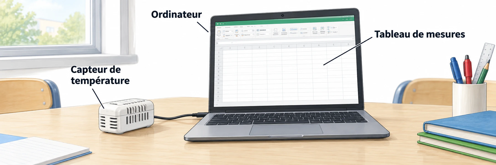

OBSERVER · EXPÉRIMENTER · EXPLIQUER
Les données d’une salle
Trie et filtre les mesures de la salle. Les données restent celles de la fiche.

✎ Garde ta feuille à côté de toi.Ordinateur : manipulations et mesures simulées. Papier : relevés, réponses, calculs et croquis. Matériel réel : essai complémentaire si disponible.
Des observations pour expliquer
- Q2–Q4 : ajoute ta colonne, calcule les indicateurs et trace le graphique sur papier.
- Q5 : réalise aussi la formule conditionnelle dans le tableur.
Appuie ton explication sur une valeur, un changement observé ou une comparaison. Distingue ce que montre le modèle et ce qui reste à vérifier.